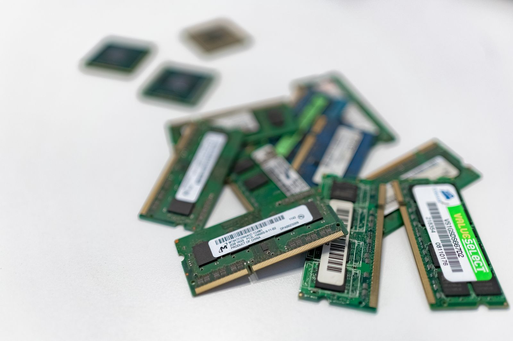

Faire durer le matériel plutôt que le recycler. Et le faire ici.
Recycler, c'est bien. Réemployer, c'est mieux. Un ordinateur qui repart travailler chez quelqu'un d'autre, c'est un ordinateur neuf qui n'a pas besoin d'être fabriqué. Or c'est la fabrication qui pèse le plus lourd dans l'empreinte carbone du numérique, loin devant l'usage : extraction des métaux, énergie, eau, transport depuis l'autre bout du monde (étude ADEME-Arcep, actualisée en 2025). Le recyclage, lui, arrive en bout de chaîne : il broie, trie et refond, il consomme de l'énergie et ne récupère qu'une partie des matières. Nous le mettons donc à sa vraie place : en dernier recours, quand plus rien ne peut être réparé ni réutilisé.
Nous enlevons le matériel en Savoie et en Haute-Savoie, et seulement là (hors zone, un lot important peut être étudié). Un utilitaire qui fait le tour de la vallée pour collecter trois portables et deux écrans, ce n'est pas un conteneur qui traverse un océan. Les trajets sont courts. Le matériel est effacé, testé et réparé à l'atelier, puis il repart en priorité dans le même territoire : une école, une association, un foyer, une petite entreprise du coin. L'ordinateur que vous nous confiez à Annecy, Chambéry, Cluses ou Albertville ne finit pas dans un entrepôt à l'autre bout de l'Europe. Il reste dans les Savoie, et il sert à quelqu'un qui habite près de chez vous.
Nous refusons trois choses. Le greenwashing, d'abord : nous ne dirons jamais qu'un ordinateur réemployé est « neutre en carbone » ou « bon pour la planète ». Il a un impact, plus faible qu'un neuf, c'est tout. L'export de déchets, ensuite : rien de ce que nous collectons n'est confié à un exportateur ; ce qui est irréparable est démonté ici, pour pièces, puis remis à un éco-organisme agréé, seule filière habilitée, avec un bordereau de traçabilité. La promesse de « zéro impact », enfin : elle n'existe pas. Collecter, tester, effacer, réparer, cela consomme de l'énergie et des kilomètres. Nous préférons compter honnêtement et publier ce que nous mesurons.

Nos engagements
Des objectifs, pas des slogans. Chacun se mesure, et nous publierons les résultats, bons ou moins bons.
Un bilan public chaque année
Le nombre d'équipements collectés, le nombre remis en service et le taux de réemploi qui en découle, méthode de calcul incluse. Premier bilan à l'issue de la première année d'activité.
Rien de jeté par nos soins
Aucun équipement collecté n'est jeté ni mis en décharge par nos soins : ce qui n'est pas réemployable est démonté pour pièces et le reste remis à un éco-organisme agréé, avec un bordereau par lot.
Zéro donnée non effacée
Chaque disque qui passe par l'atelier reçoit un certificat d'effacement conforme NIST 800-88 (Purge quand le matériel le permet, Clear sinon), sauf s'il vous est restitué à votre demande. Un disque en panne, impossible à effacer, est détruit physiquement et tracé comme tel.
Pièces récupérées avant tout achat de neuf
Pour chaque réparation, nous cherchons d'abord la pièce dans notre stock de démontage. Nous suivons la part de réparations réalisées avec des pièces de réemploi et nous la publierons avec le bilan annuel.
Le matériel reste, en priorité, dans les Savoie
Les équipements remis en service sont proposés en priorité aux écoles, associations, foyers et petites structures de Savoie et de Haute-Savoie. Nous publierons la part restée dans les deux départements.
Des délais affichés et tenus
Offre de rachat sous 48 h ouvrées, enlèvement dans les 10 jours suivant l'accord, virement sous 7 jours après diagnostic. Nous publierons le taux de dossiers traités dans ces délais, et nous expliquerons les écarts.
L'atelier
L'atelier est un lieu simple : une zone de réception, un poste d'effacement dans un local fermé, des paillasses de test, un coin réparation et des étagères de stockage. Quand un lot arrive, chaque équipement reçoit une étiquette avec le code de suivi de votre dossier. Il est photographié et son état extérieur est noté. Vient d'abord l'effacement : chaque disque est traité avec un outil dédié, selon la méthode NIST 800-88, et le certificat, un par disque, est rattaché à votre dossier.
Puis l'équipement passe sur le banc de test. Nous vérifions toutes les fonctions, pas seulement le démarrage : allumage, écran, clavier, batterie, ports, connectique. C'est cette étape, avec l'effacement, qui nous autorise à parler de matériel reconditionné au sens du décret 2022-190. La réparation suit : batterie, dalle, clavier, mémoire, disque, avec des pièces prises d'abord dans notre stock de démontage. Ce qui ne peut pas être réparé est démonté, ses pièces sont rangées, et les carcasses partent chez l'éco-organisme agréé. Le matériel prêt est stocké, propre et étiqueté, en attendant de repartir vers une école, une association ou un foyer du territoire. Quand il est vendu à un particulier, il est couvert par la garantie légale de conformité de deux ans.
